Manual de reglas de la versión física · 2 a 5 jugadores · unos 15 minutos
Aprende a identificar los conectores internos y externos de un ordenador jugando al poker.
Gana la partida quien acabe con más fichas. Para cobrar un bote no basta con tener la mejor mano de cartas: hay que demostrar que sabes qué conectores tienes, para qué sirven y dónde van.
Se juega al estilo Texas Hold'em: cada jugador tiene 2 cartas propias y hay 5 cartas comunes en la mesa. Son fichas de juego: no se apuesta dinero real.
Tu mano es la mejor combinación de 5 cartas entre tus 7 (tus 2 y las 5 de la mesa). Las cartas de la mesa son comunes: también ayudan a tus rivales.
Empieza el jugador que tiene el turno de salida y se sigue en el sentido del reloj. En cada ronda, cuando te toca, puedes:
El turno de salida pasa al jugador de la izquierda en cada mano.
| Cartas | ¿Qué forman? | Por qué |
|---|---|---|
| Foto HDMI + Nombre HDMI | Pareja de HDMI | Mismo conector, tipos distintos |
| Foto HDMI + Función "Vídeo y audio digital" | Pareja de HDMI | Mismo conector, aunque no se parezcan en nada |
| Ubicación VGA + Ubicación DVI | Nada (dos cartas sueltas) | Mismo tipo: nunca son del mismo conector |
| Nombre HDMI + Nombre DisplayPort | Nada | Se parecen, pero son conectores distintos |
Cada conector tiene una ubicación propia y distinta (por ejemplo, "Panel trasero, salida de vídeo azul" es el VGA y la blanca es el DVI), así que cada carta de Ubicación describe dónde va ese conector.
Las cartas se agrupan por conector, sea cual sea su tipo. Por ejemplo, la Foto de HDMI y la Función "Vídeo y audio digital" son una pareja de HDMI. Un conector no puede dar más de 4 cartas (una de cada tipo). De menor a mayor:
| Mano | Grupos | Ejemplo |
|---|---|---|
| Carta alta | 1-1-1-1-1 | Cinco conectores distintos |
| Pareja | 2-1-1-1 | Foto y Nombre de HDMI + 3 cartas sueltas |
| Doble pareja | 2-2-1 | Dos de HDMI + dos de RJ45 + 1 suelta |
| Trío | 3-1-1 | Foto, Nombre y Función de HDMI + 2 sueltas |
| Full | 3-2 | Tres de HDMI + dos de RJ45 |
| Póker | 4-1 | Las cuatro cartas de HDMI + 1 suelta |
| Escalera de energía | 5 Nombres | Las cartas Nombre de IEC C13/C14, ATX 24 pines, EPS 4+4 pines, PCIe 6+2 pines y SATA alimentación |
Gana el rango más alto. Si hay empate, se compara el número del conector del grupo principal (el de la lista del anexo: gana el número más alto). En una doble pareja se compara primero la pareja mayor y luego la menor; en un full, primero el trío y luego la pareja. Después se comparan las cartas sueltas, de mayor a menor número. Si sigue el empate, se reparte el bote.
| Carta | Qué hace | Para usarla, hay que saber… |
|---|---|---|
| Trampa 6 cartas | Cuenta como carta de Función de uno de los dos conectores de su par. Pares: HDMI/DisplayPort, VGA/DVI, USB-A/USB-C, SATA datos/M.2, ATX 24/EPS 4+4 y PCIe 6+2/EPS 4+4. | La diferencia entre los dos conectores del par. |
| Comodín USB 2 cartas | Sustituye a una carta de USB-A o de USB-C. | La velocidad de una versión de USB (ver anexo). |
| Comodín Anti-error 2 cartas | Sustituye a una carta de un conector interno (los 10 primeros de la lista). | Su característica anti-error (muesca, forma de L, clip…). |
Quien tiene la mejor mano no cobra todavía: tiene que superar un reto. Esto es lo que convierte la partida en un repaso de los conectores.
Si nadie lo supera, el bote se queda en la mesa y se acumula a la mano siguiente. Si hay empate en la mejor mano, cada empatado hace su reto y los que lo superen se reparten el bote.
Consejo: el examinador puede mezclar el orden de las preguntas y evitar dar pistas con el gesto.
Juegan Ana, Bruno y Carla (en ese orden, en el sentido del reloj). Todos pagan el ante y reciben 2 cartas:
| Jugador | Sus 2 cartas |
|---|---|
| Ana | Foto HDMI Función HDMI |
| Bruno | Nombre RJ45 Foto VGA |
| Carla | Ubicación DVI Función SATA datos |
Porque las parejas se forman por conector. Dos cartas del mismo tipo (por ejemplo, la Ubicación del VGA y la del DVI, que hablan del panel trasero) son siempre de conectores distintos. Solo juntan cartas de tipos distintos del mismo conector.
Leyendo el texto con atención: cada función y cada ubicación describe a un solo conector. Si dudas, repasad los conectores antes de empezar: la Hoja del examinador es solo para quien pregunta en el reto.
Una carta especial solo cuenta si sube el rango de tu mano, si el conector no tiene ya en tu mano la carta de ese tipo y si no hay otra especial usada. Solo cuenta una por mano.
Se desempata por el número del conector y luego por las cartas sueltas. Si sigue el empate, cada uno hace su reto y los que lo superan reparten el bote.
| Palabra | Significa |
|---|---|
| Ante | La ficha que todos ponen en el bote al empezar cada mano. |
| Bote | Las fichas acumuladas que se lleva el ganador. |
| Flop, Turn, River | Las 3 primeras, la 4.ª y la 5.ª carta de la mesa, que se van descubriendo. |
| Igualar / Subir | Poner las fichas de la apuesta actual / apostar 1 o 2 más. |
| Retirarse | Abandonar la mano perdiendo lo que hayas puesto. |
| Showdown | El momento de enseñar las cartas y comparar manos. |
| Reto | Las preguntas que debe superar el mejor jugador para cobrar el bote. |
| Examinador | El jugador a la izquierda del que hace el reto, que pregunta con la Hoja del examinador. |
Los números son la prioridad en los desempates. La columna Anti-error es la respuesta del comodín Anti-error y de las preguntas extra.
| # | Foto | Conector | Función | Ubicación | Anti-error |
|---|---|---|---|---|---|
| 1 | 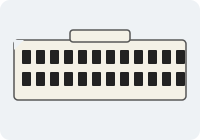 | ATX 24 pines | Alimentación de la placa base | Placa base, borde junto a la RAM ← fuente | Carcasa asimétrica con clip de bloqueo: solo entra en una posición |
| 2 | 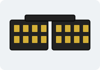 | EPS 4+4 pines | Alimentación de la CPU | Placa base, esquina junto a la CPU ← fuente | Carcasa con formas asimétricas y clip de bloqueo |
| 3 | 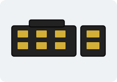 | PCIe 6+2 pines | Alimentación de la tarjeta gráfica | Gráfica ← fuente | Carcasa asimétrica con clip; el módulo "+2" se separa para usar 6 pines |
| 4 | 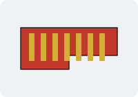 | SATA datos | Datos de discos HDD/SSD | Placa base ↔ disco | Forma de L |
| 5 | 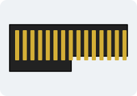 | SATA alimentación | Alimentación de discos | Disco ← fuente | Forma de L (más ancho que el de datos) |
| 6 | 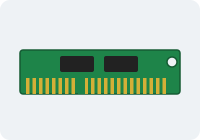 | M.2 | SSD NVMe/SATA, tarjetas wifi | Placa base, entre la CPU y la ranura PCIe | Muesca (key B, M o B+M) que limita en qué ranuras entra |
| 7 | 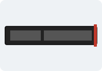 | Ranura PCIe x16 / x1 | Tarjetas de expansión | Placa base, parte inferior (ranuras largas) | Muesca a un lado que impide insertar la tarjeta al revés |
| 8 | 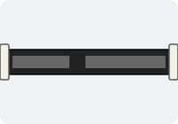 | Ranura DIMM | Módulos de memoria RAM | Placa base, a un lado de la CPU | Muesca descentrada y clips laterales; cada generación DDR cambia la posición de la muesca |
| 9 | 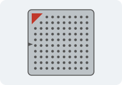 | Socket CPU | Procesador | Placa base, centro (bajo el disipador) | Triángulo de alineación en una esquina y muescas asimétricas |
| 10 | 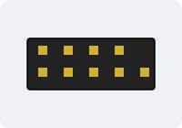 | Panel frontal (F_PANEL) | Botón de encendido, reset, LEDs | Placa base, borde inferior (cables de la caja) | Cabecera con un pin ausente (key) y cables etiquetados con polaridad |
| # | Foto | Conector | Función | Ubicación | Anti-error |
|---|---|---|---|---|---|
| 11 | 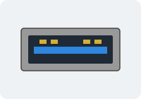 | USB-A (2.0 / 3.x) | Periféricos y almacenamiento | Panel trasero (varios) y frontal | Rectangular y no reversible: solo entra en una posición |
| 12 | 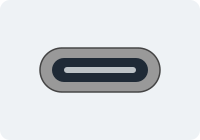 | USB-C | Datos, vídeo y carga | Panel frontal y trasero (suele haber 1 o 2) | Reversible (simétrico 180°): no necesita orientación |
| 13 | 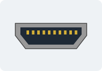 | HDMI | Vídeo y audio digital | Placa base o gráfica: salida a monitor o TV | Forma de trapecio con dos esquinas achaflanadas |
| 14 | 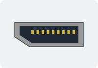 | DisplayPort | Vídeo digital de alta resolución | Placa base o gráfica: salida a monitor de alta resolución | Una esquina cortada (achaflanada) |
| 15 | 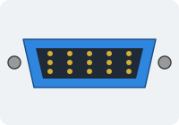 | VGA | Vídeo analógico (antiguo) | Panel trasero, salida de vídeo azul (antigua) | Forma de D con tornillos de sujeción |
| 16 | 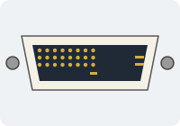 | DVI | Vídeo digital/analógico (antiguo) | Panel trasero, salida de vídeo blanca (antigua) | Forma de D con tornillos y pin plano distintivo |
| 17 | 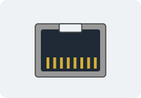 | RJ45 | Red Ethernet | Panel trasero, entrada de red | Pestaña de plástico (clip) y forma asimétrica |
| 18 | 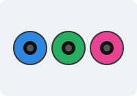 | Jack 3,5 mm | Audio: salida, micrófono, línea | Panel trasero (3 jacks de colores) y frontal | Sin muesca: se evita el error con el código de colores (verde salida, rosa micrófono, azul línea) |
| 19 | 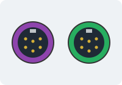 | PS/2 | Teclado y ratón (antiguo) | Panel trasero, zona de teclado y ratón | Mini-DIN con guía y código de colores (violeta teclado, verde ratón) |
| 20 | IEC C13/C14 | Alimentación eléctrica de la fuente | Fuente | Forma trapezoidal asimétrica; C13 es la hembra del cable y C14 el macho de la fuente |
| Versión | Velocidad |
|---|---|
| USB 2.0 | 480 Mbps |
| USB 3.2 Gen 1 (antes 3.0) | 5 Gbps |
| USB 3.2 Gen 2 (antes 3.1) | 10 Gbps |
| USB 3.2 Gen 2x2 | 20 Gbps |
| USB4 | 40 Gbps |
| USB4 versión 2.0 (opcional) | 80 Gbps |
HDMI / DisplayPort · VGA / DVI · USB-A / USB-C · SATA datos / M.2 · ATX 24 pines / EPS 4+4 pines · PCIe 6+2 pines / EPS 4+4 pines.
Las ilustraciones de los conectores son obra propia del grupo (CC0). Versión web del juego: pablo96sancho.github.io/Juego-Conectores-DAM